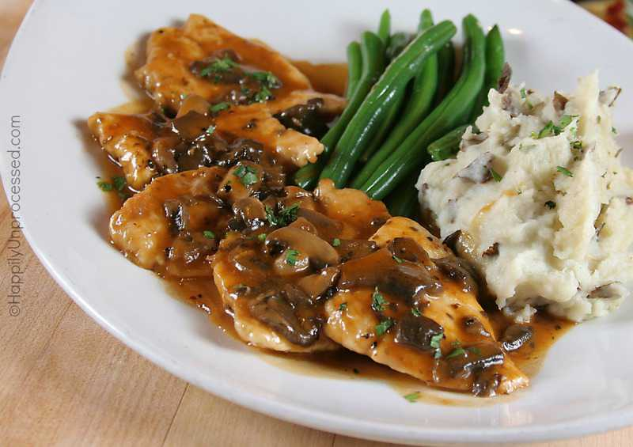

Chicken Marsala is a classic dish loaded with rich, meaty, and herbaceous flavor. A luscious mushroom wine sauce coats fried chicken breast for an unrivaled taste of Italian-inspired goodness. This mouthwatering recipe transforms common pantry ingredients into a show-stopping meal. Learn how to make the best Chicken Marsala right here.